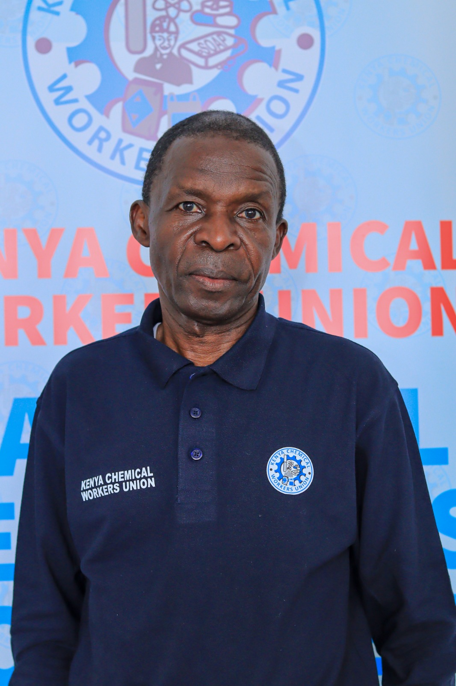
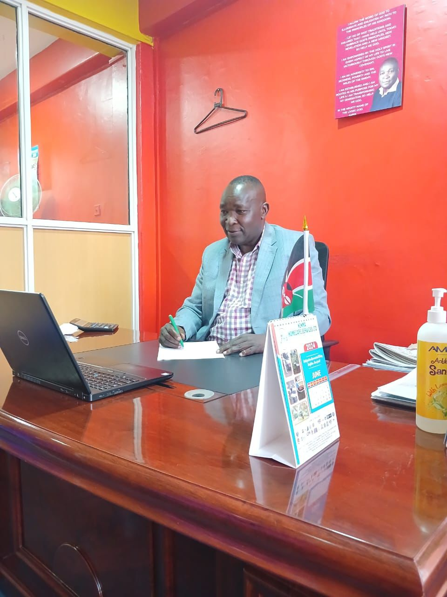
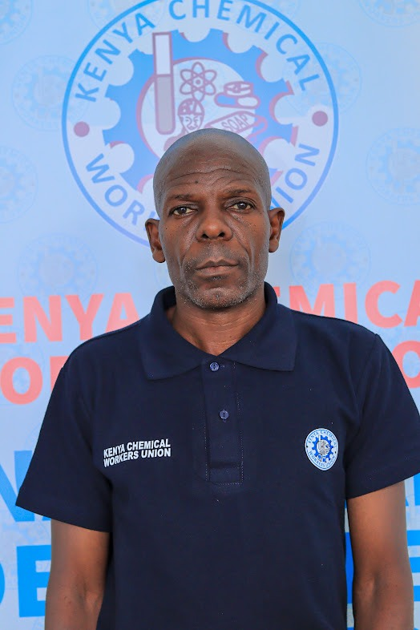
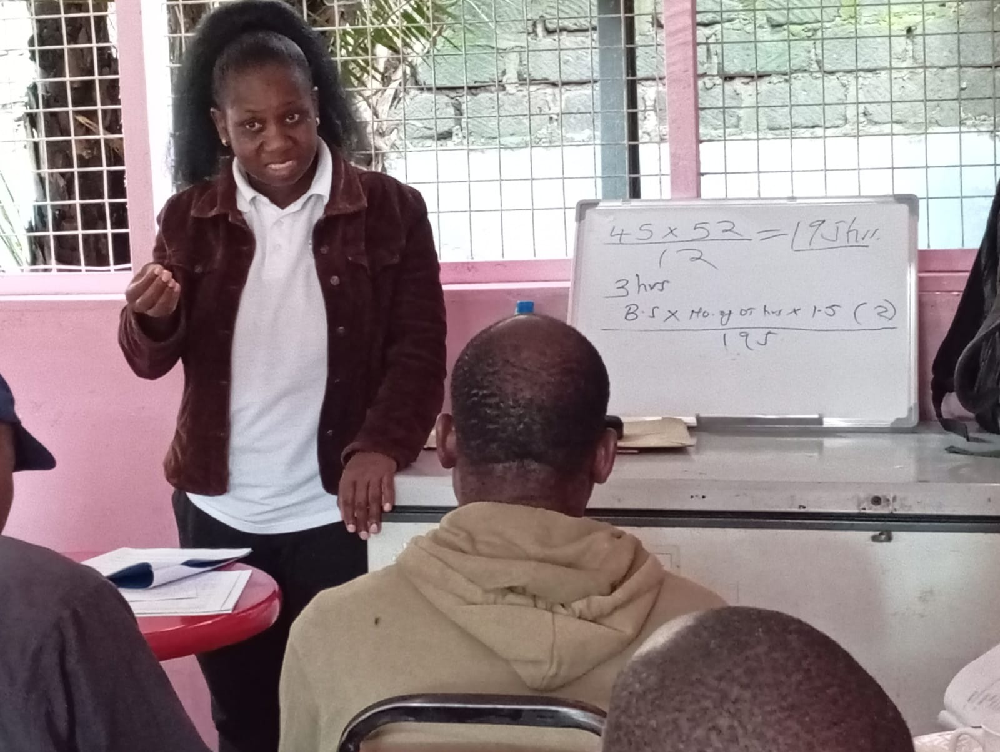

About Kenya Chemical and Allied Workers' Union
Kenya Chemical Workers Union was established in 1954 and registered under the former Trade Unions Act — now the Labour Institutions Act. Over the years we have been consistent and steadfast in balancing the delicate role of articulating the rights of workers and maintaining sound industrial relations as a key pillar for promoting both industry growth and employment for a better Kenya.
Why were trade unions formed?
"Unions were created to make living conditions better than they were before they were formed, and the union that does not manifest that kind of interest in human beings cannot endure." — Philip Murray, former President of the Congress of Industrial Organizations (CIO).
Who can become a member?
KCWU is a membership-based organisation open to all unionisable employees. Once you have completed a check-off agreement form, your employer will start deducting the prescribed subscription fee from your salary. You will then be eligible for all benefits negotiated by the union on your behalf.
Our Motto
To Eradicate Poverty and Strive for Equality and Justice.
Our Vision
To be recognised as the leading union in the promotion of equity, justice and empowerment of workers — not only in Kenya, but globally.
Our Values
Solidarity, Integrity, Justice, Transparency, Equality and Worker Safety.
Meet Our Leadership

Peter Ouko
National General Secretary

Jacob Odundo
Deputy National General Secretary
Hillary Lihalakha
National Chairman

Charles Odongo
National Treasurer

Joyce Chari
Assistant National General Secretary
Our History
1954 — Founding
The Kenya Chemical and Allied Workers' Union (KCWU) was formed to defend workers in the chemical and allied industries.
1985 — Expansion
KCWU expanded representation to cover workers in manufacturing, cleaning, and processing sectors.
2003 — National Recognition
The union achieved national recognition for its work in improving occupational health and worker safety.
2022 — Modernisation
KCWU embraced digital service delivery, online reporting, and member support systems — driven by incoming Deputy General Secretary Jacob Odundo.